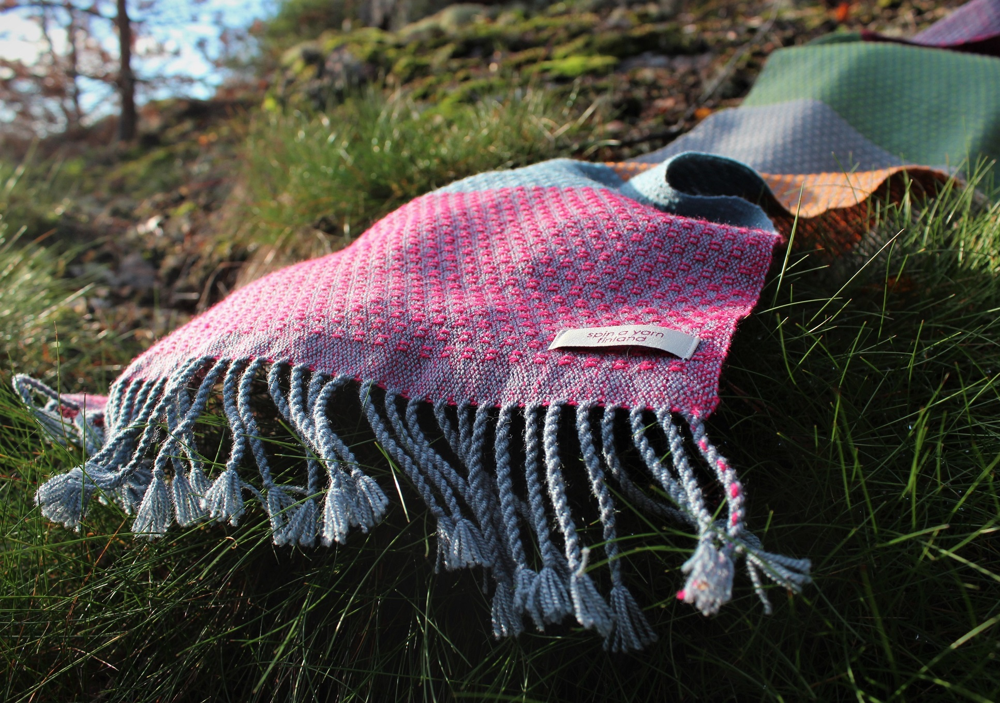
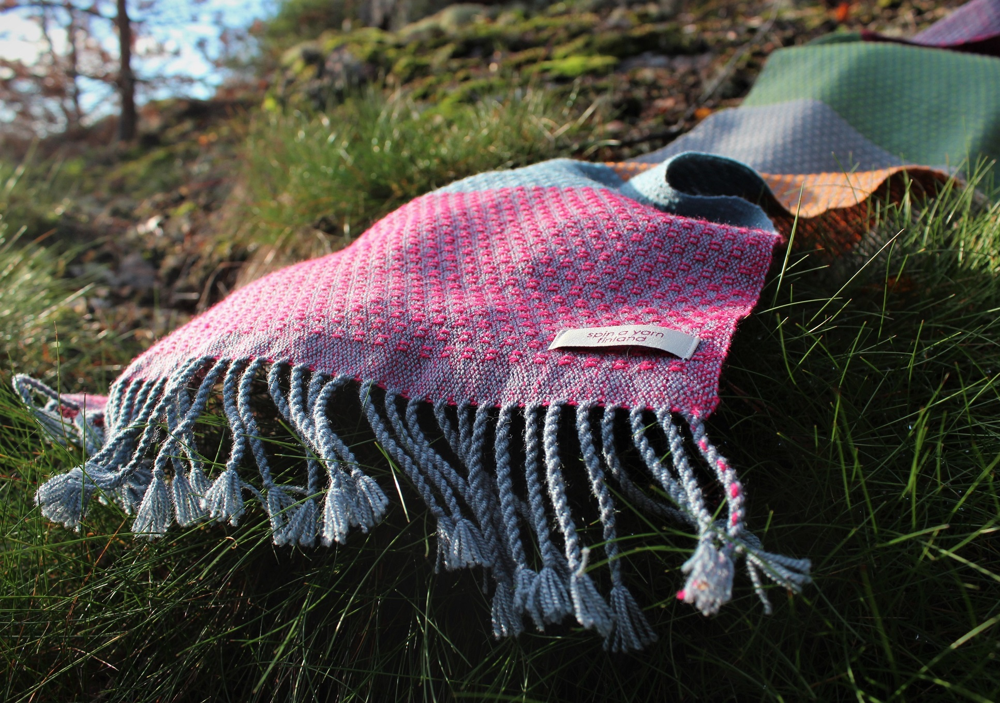

mitä
Spin a yarn on yksilöllistä designia; lähellä tuotettu, kestävän kehityksen periaatteita noudattava vaihtoehto massatuotannolle ja kertakäyttökulttuurille.
Se on tyylikäs huivi silkkivillasta, lämmin villapaita suomenlampaanvillasta tai alpakasta ja raidallinen matto kierrätyspuuvillasta, toteuttaen tekijänsä mielijohteita tekstiilisuunnittelun saralla.
missä
Spin a yarn -ateljee sijaitsee Loviisan ja Porvoon puolessa välissä, Pernajan Rikebyn kylässä. Olet lämpimästi tervetullut vierailulle: soita tai lähetä sähköpostia, niin sovitaan tapaaminen!
miten
Sinulla on idea, tarve. Haluamasi tekstiili voi tulla itselle tai lahjaksi. Lähtökohtamme voi olla käyttötarkoitus, väri tai vaikka materiaali. Tavoitteena on tehdä se iloinen keittiön matto, juhlava pöytäliina tai pitkä neuletakki, jonka juuri sinä tarvitset. Spin a yarn – tekstiili saattaa myös olla jo olemassa, sinä vain valitset sen.
 
